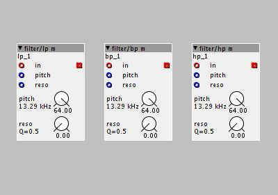

Check @DrJustice filterobject. There is a filter called filter/vcf3_full_bw which has a range to 24k. BUt hmmm... I cant find it right now. I have it in my local library but cant find it in community library. BUT I am pretty sure there are other filters that has a range to 24.khz.... And then you can calculate how to set it to a range og 20hz to 20khz.
How to set-up 20Hz to 20kHz range on the filter dials?
axoman
#7
Same here, I don't see see any filters under "drj", I even updated the library just in case.
But yup, that's basically what I'm after, a set of full-bandwidth filters, preferably full-bandwidth versions of the ones shown in the image cause I like the character of them. I'll just have to spend some time going through the lists of stuff available. I was going to request full-bandwidth versions of these filters, but I wouldn't know who was the best person to ask, and I don't want to go asking in various contributor threads, otherwise it might look like I'm spamming.
If there's any contributor reading this who fancies creating them, please modify these filters so that we can at least work in the usual 20Hz to 20kHz audio range. If possible, please keep the modification strictly to the range of the filter, not the sound of them. I think they're really nice filters, it's just a bummer they have that limited range on them.

axoman
#10
@kausto
Just took a look, thanks for pointing them out - full bandwidth filters!
@thetechnobear
That's great news, but how do I access them?
I synced my libraries and I'm using the latest firmware. Is there something else I need to do, or update, to make those updated versions show up in my object library?
DrJustice
#11
That was only in testing and discussion, never published IIRC, but the change was factored into the code by Johannes. BTW, that only made them g to the indicated 13kHz, whereas previously they topped out at 6.5kHz (also IIRC, I did some measurements back then). I think we still need factory filters that go all the way to 20kHz, as well as frequency dials that go to 20kHz.
AFAIK the vcf factory objects got updated.
Pioneer/Traktor style Dj Filter
axoman
#12
@DrJustice
The philoop filter kausto pointed out has a 24kHz range, but I just tried it out and unfortunately it's not working for me, it's letting audio pass through even with the pitch dial set to 0kHz.
Regards the factory filters, I can't imagine what I'm doing wrong. I've synced my libraries and the factory filters I keep getting are the (presumably older) ones in the screenshot. I even set the dials to max to show it, so those are the factory filters in my freshly synced library.
axoman
#14
When you say labels, are you refering to the readout labels of the dials, or the label of the objects?
thetechnobear
#16
as you will see the above commit I referenced, removes the cutoff limit entirely (doesn't change it)
I dont think its a matter of labels, its just the objects functionality since they use pitch, rather than frequency... (for both code and dials), and pitch is limited to a 'useful range' (G#9)
this all comes down to parameter scaling such that the 0..64/-64..64 makes 'sense', this is why we have osc with pitch and frequency variants.
a simple test/fix would be to dupe (e.g) vcf3, change the dial to frequency, and remove the MTOF call
then test it.. see if the filter code is then stable to 20hz (or whatever)
but please note, the following code comment from the filter, this will presumably be the upper limit
// warning: filter_W0 values above 0x50000000 produce unstable results
EDIT: a quick test shows this 'seems' to work, if someone test properly then I will commit a freq version to the factory library. (vcf3 lin, to match osc naming)
axoman
#17
Mark, I'm afraid the coding stuff is beyond me, you might as well speak to me in alien tongue!
But trying my best to understand, so you're saying the filters are actually full-bandwidth, it's just the format of the readouts that are confusing me?
If so, that's great, though not ideal, because naturally I expect a filter dial to readout in frequency. After all, the sole function of filter objects is to filter, so they should readout in frequency. But as long as it has the range, that's fine, that's really all I was concerned about.
BTW, although I'm not a coder, I do have an idea of why things are done the way they're done, so please don't take my comment as a complaint, other than obviously it's not very user friendly or obvious in a building-block sort of way, even though Axoloti is essentially a building-block sort of environment.
Biquad Filters: How to do LP ↔︎ Bypass ↔︎ HP
axoman
#18
Sorry Mark, didn't see your edit until after I posted!
Thanks, would love filters with a frequency readout, now that makes perfect sense to me 

thetechnobear
#19
pitch and frequency are both useful , e.g. its easier to do pitch tracking of a filter, if its inlets are pitch (not frequency)
anyway, Ive just checked in to the community library one object for testing...
can you test this, and see if its really going above 18k or so...
I did a test with vcf3 and it appeared too, but Id like to have a proper audio test done before I start creating more filter variants in the factory lib.
axoman
#20
You missed my post again, but thanks!
I can test but I have to find a cable I need. I'd have tested from the start if I knew where it was. At the moment I literally have access to a pair of headphones, that's it, but I'll dig around for the cable.
BTW, thanks to all for the input in this thread, we got there in the end, and now we're getting frequency readout, so yay for that!
thetechnobear
#21
about the 'code comment'
the 0x50000000, confuses me a bit... as in the freq dials 0x07FFFFFF = 24kHz (which is max we can expect)
so I'm guessing it might mean 0x05000000, which is 15kHz ..
@johannes simple typo? are the filters only 'stable' to 15kHz, so little gain in a freq variation?
 perhaps get your (or a friends) dog to help out
perhaps get your (or a friends) dog to help out
axoman
#23
Haven't tested my hearing in a while, but when I were a teenager, I was probably too neive to appreciate the ability. And now that I'm old enough to appreciate it, I probably don't have it 
That said, I do know a cool place where Goths hang out, so maybe I can borrow a bat or two!
axoman
#24
Can't find the cable so did a bit of hardware jiggling instead.
The filter is passing frequencies up to 24kHz. I passed uniform noise through the filter wide-open, then fed it into Audacity and checked the spectrum. It's definitely passing audio up to 24kHz.
While I was at it, I also checked my hearing and was shocked to find I can still hear 20kHz. I'm absolutely amazed because last time I tested, I couldn't quite reach that, but who knows, maybe it was my headphones!
I'm feeling quite pleased with myself, you can call me 'Golden Ears' if you like 
thetechnobear
#25
Cool, is itpossible for you to determine if there are any 'artifacts' above a certain frequency.
I need to determine the benefits before I go thru the effort of creating various filter variations.
( it's not hard to do, but will take some time, so it has to be right)